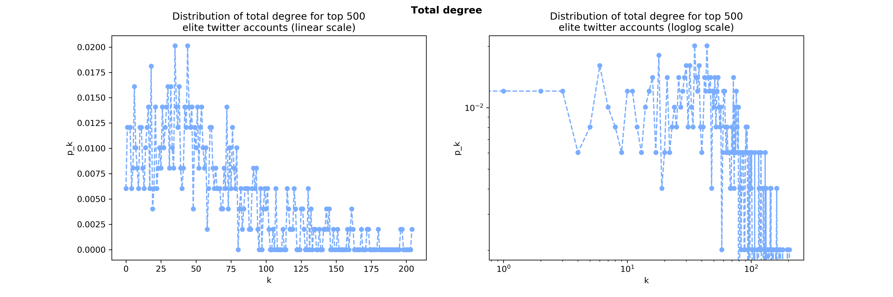
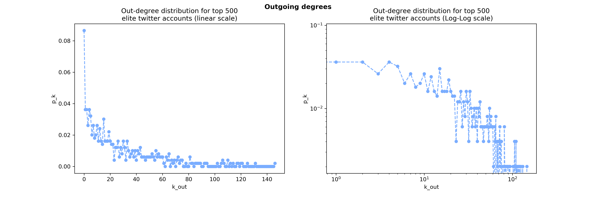
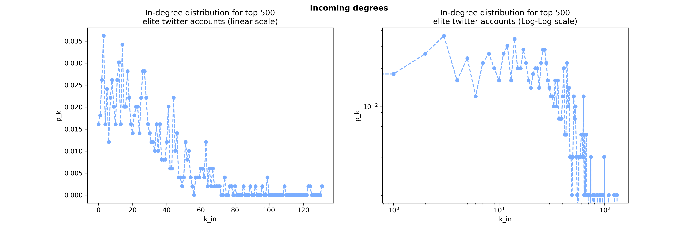
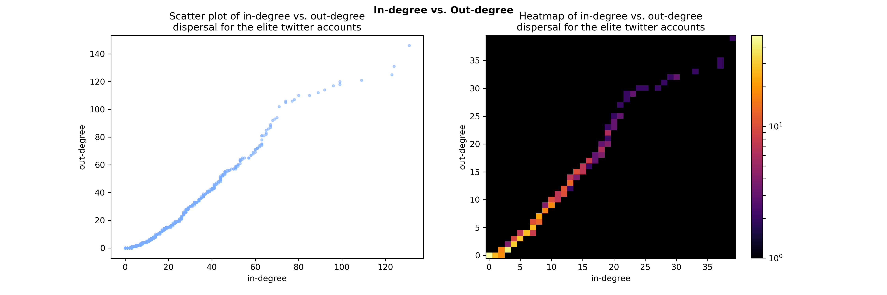
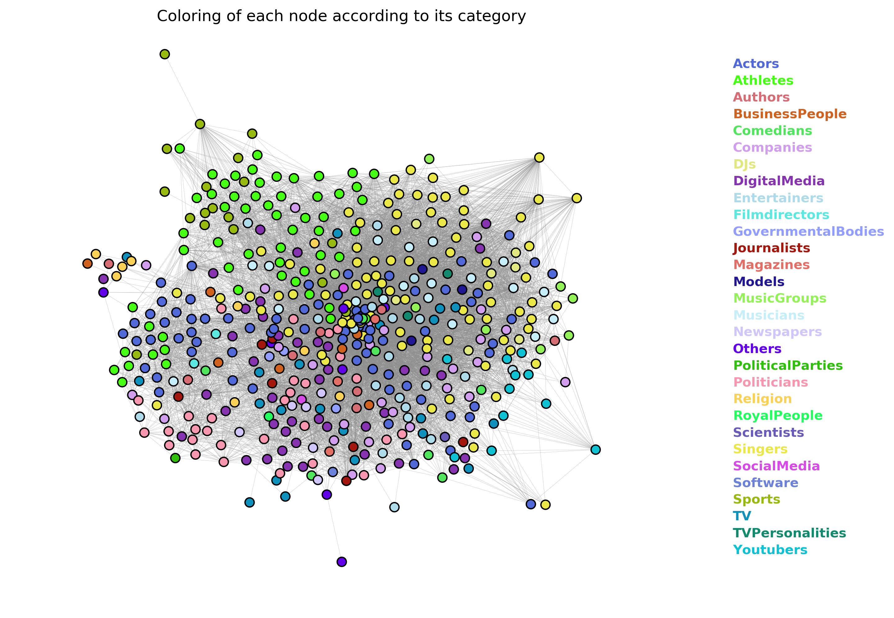
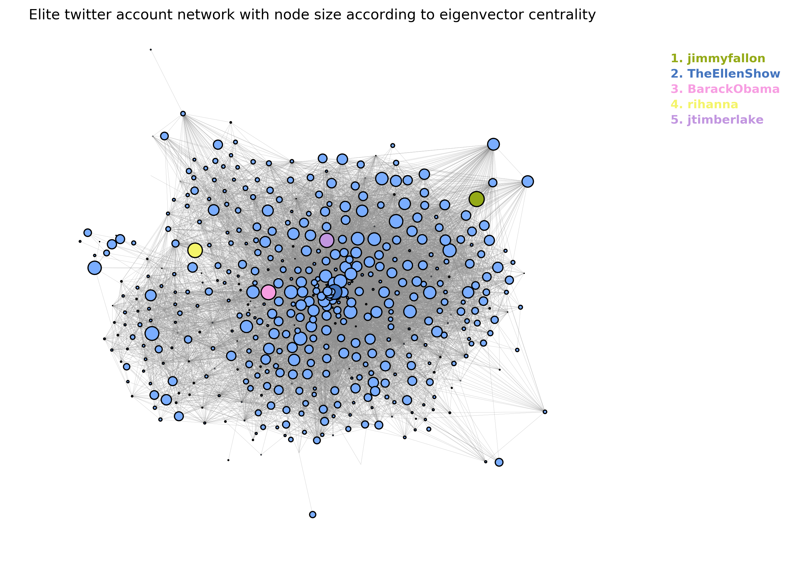

Project Motivation
In this project a social network of the 500 most followed accounts on Twitter has been created to analysis the relationship between them. And we have extract the latest 200 tweets of each account for deeper analysis. The analysis methods are acquired from 02805 Social Graphs and Interactions.
For each elite, the information about amount of friend he/she follows, the number of followers will offer us the insight of how the twitter elite connect, which is the social network. Additionally, we can implementing sentimental analysis via collecting latest 200 tweets of each elite, therefore a wordcloud contians the keyword based on tweets could be created. Furthermore, by the sentimetal analysis for each category, we get more insights about what they care about most.
Moreover, employing more analysis method, such as the community detection, nodes centrality, we can grasp some several interesting hidden facts inside this social network.
1. Collect Data
We obtained the Top 500 twitter accounts from Socialblade, by the link of the list, we can access to the twitter accounts directly, then collecting data through Twitter API of each twitter account, including the number of tweets, the number of friend, the twitter ID , full name , friend list , the number of follower with the rank among 500 accounts. After we get the full name of each accounts, we acquired the category from Google by searching it automatically with a python script.
2. Data analysis
The number of twitter accounts in the data is now 497 because 3 of them were suspended. The calculations made in our whole study are based on the data structure presented below.
JSON structure for each Twitter handle
| Attribute | detail |
|---|---|
| category | profession/occupation for the user |
| followersCount | number of accounts that follow the user |
| friendCount | number of accounts that the user is following |
| friendList | names of the accounts that the user is following |
| id_str | account id for the user |
| name | fullname of the user |
| rank | the user's rank in the top 500 list |
| screen_name | the twitter handle |
| tweetsCount | number of tweets by the user |
3. Graph Visualization
As is shown to the left, the undirected social network graph consists of 497 nodes and 13243 links. Each node stands for a twitter account with a link, the following relation, between two twitter accounts.
It is noticeable that there are three isolated accounts without any link, in other words, they do not follow anyone and no one follows them neither. The rest nodes are closely connected to each other forming the GCC (Greatest Connected Component).
4. Basic statistics
Let us take a look and recap some basic statistics:
Number of nodes: 497
Number of links: 13243
Average total degree of nodes: 53.291750503
Average in/out degree of nodes: 26.6458752515
Note: total and average in- and out-degree is the same, since there is an incoming link for every outgoing link and vice versa
top 5 elite accounts followed by most other elites:
BarackObama with 131 followers
jimmyfallon with 124 followers
TheEllenShow with 123 followers
rihanna with 109 followers
justinbieber with 99 followers
SrBachchan with 146 friends
SnoopDogg with 131 friends
RyanSeacrest with 125 friends
samsmith with 121 friends
iamwill with 120 friends
Number of occupation types in the network (identified from Google right panel infobox): 30
Occupation types description (Category list):
| Actors | Athletes | Authors | BusinessPeople | Comedians |
| Companies | DJs | DigitalMedia | Entertainers | Filmdirectors |
| GovernmentalBodies | Journalists | Magazines | Models | MusicGroups |
| Musicians | Newspapers | Others | PoliticalParties | Politicians |
| Religion | RoyalPeople | Scientists | Singers | SocialMedia |
| Software | Sports | TV | TVPersonalities | Youtubers |
5. Connectedness
The graph is an unconnected with 4 componets:
Size of Greatest Connected Component: 494
Isolated node: mrdiab (twitter handle)
Isolated node: cbabdullahgul (twitter handle)
Isolated node: marioteguh (twitter handle)
There seems to be three isolated elite accounts, which is coherent with the visualization seen before. These accounts do not follow any elite accounts nor are they followed by any elite accounts.
The network diameter is 5 which means for one account to connect to another account, it has to pass 5 accounts.
A network diameter of 5 is suprisingly large in a small social network of 500 nodes. As known, the small world phenomenon or six degrees of separation (section 3.8 in NetworkScienceBook.com) says that between any randomly selected pair of individuals on Earth (i.e. roughly 7 billion nodes), there will exist a path between them consisting of at most 6 nodes .
In the following it is shown that the network is not random.

The plots above neither clearly show that the distribution of total degree follows a poisson/binominal distribution nor a power-law distribution. The loglog plot seem to follow poisson/binominal curve, while the linear scale plot looks like a mixture of a power-law and poisson/binominal distribution, or a skewed poisson distribution. However, the linear scale plot shows that there are a few high-degree nodes (hubs) and many low-degree nodes. To investigate further, we will look at the incoming degrees and outgoing degrees separately.
It can be seen here that the distribution of out-degree more closely follows power-law distribution with a few hubs and many low-degree nodes. Although the loglog plot is not a straight line, the linear scale plot clearly looks more like a power-law distribution than a poisson/binominal distribution. The poisson/binominal distribution thus fails to capture the outgoing degree distribution. Ergo, this network has more highly connected nodes with respect to outgoing degree than the random network model can account for, thus the network can be considered to be scale-free with respect to outgoing degree. This also fits well together with the claim that 'real networks are not poisson' (section 3.4 in the book networksciencebook.com). This fits fairly well with the degree distribution of the Barabasi-Albert preferential attachment model, although the preference in this case not necessarily only depends on the degree of the nodes in the network - or even at all. If it is concluded that randomness cannot account for the outgoing degree property in the network, it may represent some signature of order. In this case it is interpreted to mean that it is not random whom users choose to follow. This makes sense for users are in full control of whom they choose to follow. Hubs with respect to outgoing degree are nodes that follow many other elite twitter accounts. These are nodes that likely get alot of information by other elite accounts.
The distribution of in-degree roughly looks like a power-law distribution on the linear scale, but not as clear as the out-degree. The loglog scale plot looks more like a poisson/binominal distribution plot, however. Conclusively, the incoming degree cannot be fully explained by randomness, but it does not look completely random either. This makes sense, since users cannot completely control who chooses to follow them in the same way they can choose whom to follow, but, as also seen in the scatterplot below, users might have some control over who chooses to follow them. Hubs with respect to incoming degree are nodes that are followed by many elite accounts, and may be important in the sense that they reach a lot of elite accounts in Twitter with the information they dissiminate.
The scatter plot is interesting for showing a positive correlation between followers and following. People strongly tend to follow more elite accounts as more elite accounts follow them. Up until around 50-60, the number of out-degree is nearly the exact same as the in-degree. This could be a clear reflection of accounts following back accounts that follow them. The "you follow me, I follow you" principle or the "follow-back" principle. Additionally, the majority of the accounts how low in-degrees and out-degrees.
6. Regime
It will be examined which regime the network is in.
the network is in the connected regime This is an interesting result, because according to section 3.6 in networksciencebook.com, it should be true for the connected regime that 'the giant component absorbs all nodes and components. In the absence of isolate nodes the network becomes connected'. But this is not the case in this network. As seen earlier, there are three isolated nodes besides the giant component, even though the statistics of the network places it in the connected regime. This deviation from the mathematical prediction must be explanied by some underlying signature of order, i.e. active decision-making in terms of whom to follow on Twitter, further underlining the non-randomness.
?. Clusturing MAYBE !!
average clustering coefficient: 0.356247286567
7. Visualization of counts in the network (followCount, friendCount and tweetsCount)
The following visualizations and work is done on basis of the GCC.
The size of the nodes bellow are related to attributes
A very important note for this plot is that the node size is set according to the number of total followers the account has on Twitter. This includes accounts that are not in the elite. The number of followers does differ between the nodes in the network, however the difference does not seem to be very significant. More followed nodes seem to be positioned towards the inner half of the network.
Looking at the out-degree distribution, visualised previously, it makes sense that we see a few nodes with a very big size and many nodes with very small sizes (mostly too small to see). Recall, that the out-degree distribution was very much shaped like a power-law, i.e. there are many nodes of small in-degree and a very few nodes of very high in-degree, which is coherent with the few large nodes in the visualization above.
There seem to be some clustering of active nodes in terms of tweeting, which might suggest that active nodes tend to connect to eachother.
There seems to be no concentration of nodes according to rank. Nodes are spread out fairly evenly in terms of rank. Note that the size of the nodes have undergone an exponentiation to the power of 5 to make the difference in node size more clear.
8. Visualization of the occupation categories in the network
Hubs
Analyze the network for hubs. The out-degree distribution looks like a power-law distribution on the linear scale. Does this mean that the network is scale-free? Do we need to have a degree distribution for the total degree, i.e. a degree distribution for the undirected version of the graph?
Centrality
In the following, the most important nodes/accounts by different centrality measures will be highlighted. The centrality measures investigated in this section are degree centrality, betweenness centrality, and eigenvector centrality.
also do closeness centrality https://www.cl.cam.ac.uk/teaching/1314/L109/tutorial.pdf, slide 36
The categories for the top 5 most followed elite accounts are politicians, entertainers and singers. This centrality measure is an obvious measure for the centrality/importance of the nodes. It provides straight-forward propositions for the most important nodes in the network, as these accounts are the most followed by other elite accounts, and thus should have the ability to reach out to the most elite accounts. However, the difference in the in-degree between these 5 nodes and the rest of the nodes is not very pronounced, so the "power" that these nodes have is probably not so significant.
The betweenness centrality measure in the context of Twitter-follows could indicate how much an account is followed by or follows a pair of randomly selected other accounts. This also makes sense since SrBachchan and SnoopDogg constitute the top 2 account, who follow other elite accounts.

The highest eigenvector centralities are observed in entertainers, politicians and singers. The top 2 eigenvector centralities are observed with jimmyfallon and TheEllenShow, which makes sense since these are talk show hosts and are visited by (and thus personally known by) a lot of celebrities, which connects them with other nodes of high importance and evidently renders them important.
9. Louvain Communities
The Louvain algorithm will be used to detect communities. We will se how well they fit with the categories.
The Louvain algorithm found:
5 communities
The Louvain algorithm found 5 communities, which is much smaller than the number of categories we have (30). Why? Are the accounts likely to not care about the occupation of other accounts?
Modularity for the partition suggested by the Louvain algorithm is: 0.304122333979
The modularity for the communities found by the Louvain algorithm is 3, which is rather low, suggesting that the communities found by the algorithm may not represent reality very well.
To make the confusion matrix even more clear, we will make the confusion based on log values to bring out the data more clearly, because for the raw count there is a very big difference in the number of people in a category.
To try to shed even more light on who connects to whom, we will show only one colored square per category. This more clearly shows in which community the majority of accounts from each category are placed.
From this confusion matrix, it can be elicited which categories connect more.
Communities:
0 (Music)
Companies
DJs
Entertainers
Models
Music groups
Musicians
Singers
TV personalities
Youtubers
1 (Information and society changes)
Authors
Business people
Comedians
Digital Media
Governmental Bodies
Journalists
Magazines
Newspapers
Others
Politicians
Royal people
Scientists
Social media
Software
TV
2 (Film/Movies)
Actors
Film directors
Political parties
3 (Sports)
Athletes
Sports
4 (Religion)
Religion
As evident from the list above, there seems to be a system in the communities. Accounts affiliated with music (singers, music groups, djs, etc.) seem to gather in one community with some other accounts. Youtubers, companies, models and tv personalities might not directly have something to do with music, but seem to want to connect a lot with accounts affilitated with music.
Accounts that more or less directly impact society and influence people's position or attitude on certain matters seem to gather in one community. Authors, digital media, journalists, newspapers, politicans and media seem to fit together well. Accounts affiliated with film and movie making are nicely grouped in a community (actors and film directors). Political parties seem like a misplaced category here as it seems to fit better in with the previously mentioned community. Accounts affiliated with sports are grouped into a community, which makes sense.
And finally, there is a single account affiliated with religion, which has been placed in its own community.
From the confusion matrix, we can see that most of the singers are in a community together. Many of the network's atheltes are also placed in a community together. However, actors are split up into largely 3 communities, some of which find themselves in the same community as most of the singers, and some with most of the Digital Media. We also see a somewhat strong correlation between Athletes and Sports, whom are largely placed in the same community.
10. Assortativity
| Attribute | Value |
|---|---|
| Degree | 0.042287123080426925 |
| Category | 0.13245860604 |
| TweetsCount | -0.00235661944811 |
| FollowersCount | -0.00247377054809 |
| Rank * | -0.00247377054809 |
| FriendCount | -0.00249488597692 |
Degree | Conclusion: The degree assortativity is effectively 0, so there is no assortativity, i.e. the assortativity is basically random, i.e. there is no pattern in who connects to whom in terms of their degrees.
Category | Conclusion: The category assortativity is 0.13, which is still not high and therefore does not suggest a strong assortativity based on category, but it is higher than the degree assortativity, and it is above 0, suggesting that there is some assortativity with respect to category.
This also supports the findings from the confusion matrix. While accounts in general connect with accounts from many other categories, Singers tend to connect more to Musicians, DJs, Actors and Youtubers - which makes sense.
* Rank :effectively the same as 'count of followers' as the rank is based on the number of followers
11. Wordclouds
12. Sentiment analysis
13. Positive and negative tweets
14. Assortativity by sentiment
To tie the graph part together with the sentiment part, the network is analyzed for assortativity by positivity and negativity to answer the question: "Do accounts of the same average sentiment tend to connect with eachother?" As in do positive people tend to connect to other positive people, and do negative people tend to connect to other negative people? Or is there no system in this?
The average sentiment for each account does not seem to account for much assortativity as the value is 0.05, which is effectively 0 on a scale from 0 to 1. This result is likely affected by the limitation that the sentiment calculation is not 100% correct as it does not evaluate the context in which words are used, which may produce a wrong result.
Conclusion
To conclude this investigation and project, it does not seem like there are any one account or person that secretly has extrordinally much power.